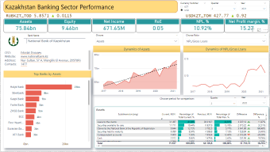
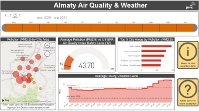
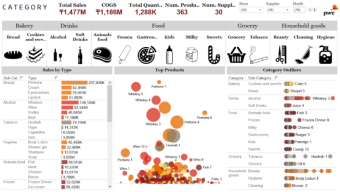

Our projects for public use
Click below pictures to access our projects.
Note: these dashboards are based on publicly available data and are periodically updated. They do not reflect PwC opinion on the topic but just show the data analysis

FS Tool
Analysis on Kazakhstan's Banking Sector which covers financial reports and compliance measures based on prudential benchmarks

Air Quality in Almaty
Analysis of air quality in Almaty measured by PM2.5 and correlation with weather conditions such as temperature, wind, humidity, cloud coverage
Test our demo data analytics dashboards
Click below pictures to access demo dashboards

Pricing Tool
Analysis on Kazakhstan's Banking Sector which covers financial reports and compliance measures based on prudential benchmarks

Audit & Reporting
Analysis of financial transactions which covers high-level reporting, identification of potential high-risk transactions and other insights